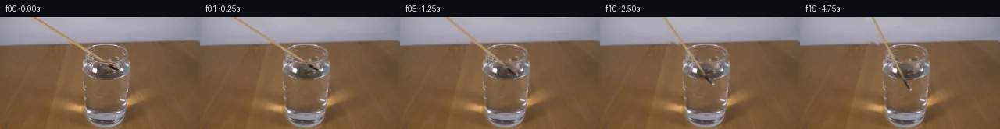

![首帧]()

Round 00
2026-11-05T11:12:16.795685+00:00像素候选变化代码 +146/−0inspection 更新
pixels 1d2321c3d0ce43e7 · code 4de6130dcebb1b2c
查看本轮 generate.py 真实 diff
--- previous/generate.py
+++ current/generate.py
@@ -0,0 +1,146 @@
+"""Continue the supplied photograph with local image operations only."""
+from pathlib import Path
+import math
+import cv2
+import numpy as np
+from PIL import Image, ImageDraw
+from scipy.ndimage import gaussian_filter
+from artifact_io import save
+
+ROOT = Path(__file__).resolve().parent
+W, H = 256, 144
+SS = 4
+original = np.asarray(Image.open(ROOT / 'first_frame.png').convert('RGB'))
+yy, xx = np.mgrid[:H, :W].astype(np.float32)
+
+def capsule(x, y, a, b):
+ ax, ay = a; bx, by = b
+ u = np.clip(((x-ax)*(bx-ax)+(y-ay)*(by-ay))/((bx-ax)**2+(by-ay)**2), 0, 1)
+ return np.sqrt((x-ax-u*(bx-ax))**2+(y-ay-u*(by-ay))**2), u
+
+# Remove only the photographed moving object and its tiny warm reflection.
+# The rest of the room and vessel are retained directly from the photograph.
+shaft_d, _ = capsule(xx, yy, (39.0,-2.0), (138.2,59.9))
+head_d, _ = capsule(xx, yy, (138.2,60.2), (152.0,67.1))
+glow_d = ((xx-140.8)/4.0)**2 + ((yy-59.7)/3.3)**2
+reflection_d, _ = capsule(xx, yy, (118.0,61.6), (145.0,63.0))
+remove = (shaft_d<2.8) | (head_d<3.4) | (glow_d<1.0) | (reflection_d<1.2)
+clean = cv2.inpaint(original, (remove*255).astype(np.uint8), 3.0, cv2.INPAINT_TELEA)
+# Partial blending at the narrow perimeter avoids an abrupt rectangular edit.
+remove_a = np.clip(gaussian_filter(remove.astype(np.float32), .40)*1.5, 0, 1)
+background = original.astype(np.float32)*(1-remove_a[...,None])+clean.astype(np.float32)*remove_a[...,None]
+
+# Use the source wooden shaft and black head as a rigid image-space object.
+# Alpha is reconstructed from the shaft geometry, then foreground colors are
+# decontaminated against the local background, preserving the source texture.
+shaft_alpha = np.clip((1.65-shaft_d)/.65, 0, 1)
+head_alpha = np.clip((2.30-head_d)/.75, 0, 1)
+source_alpha = np.maximum(shaft_alpha, head_alpha)
+source_alpha = gaussian_filter(source_alpha, .24)
+source_color = np.clip((original.astype(np.float32)-background*(1-source_alpha[...,None])) / np.maximum(source_alpha[...,None], .08), 0, 255)
+# Desaturate just the tiny orange burning region for the extinguished tip.
+warm = ((xx-138.5)/4.8)**2 + ((yy-60.6)/3.0)**2
+warm_alpha = np.exp(-warm*1.8) * source_alpha
+neutral = np.stack([source_color.mean(2)*.72]*3, axis=2)
+source_color = source_color*(1-warm_alpha[...,None]*.83)+neutral*(warm_alpha[...,None]*.83)
+
+bh = cv2.resize(background, (W*SS,H*SS), interpolation=cv2.INTER_CUBIC)
+sa = cv2.resize(source_alpha, (W*SS,H*SS), interpolation=cv2.INTER_LINEAR)
+sp = cv2.resize(source_color*source_alpha[...,None], (W*SS,H*SS), interpolation=cv2.INTER_LINEAR)
+Y,X = np.mgrid[:H*SS,:W*SS].astype(np.float32)
+X=(X+.5)/SS-.5; Y=(Y+.5)/SS-.5
+water_ellipse = ((X-136)/29.0)**2+((Y-65.5)/12.0)**2
+water_inside = ((X-136)/28.0)**2 + ((Y-95)/43.0)**2 < 1.0
+# The head begins at the near part of the surface. Its steady immersion bends
+# the small projected surface reflection and causes modest decaying ripples.
+frames = [original.copy()]
+poses = [{'frame':0,'tip':[152.,67.1],'angle_deg':32.,'flame':1.}]
+base_angle = math.atan2(61.9, 99.2)
+for frame in range(1,20):
+ t=frame/4.0
+ u=min(t/3.8,1.0)
+ # Cubic easing has a gentle start and settles by the final second.
+ q=u*u*(3-2*u)
+ tip=np.array([152.-11.0*q,67.1+25.0*q], np.float32)
+ angle=base_angle+math.radians(31.0)*q
+ da=angle-base_angle
+ co,si=math.cos(da),math.sin(da)
+ rotation=np.array([[co,-si],[si,co]],np.float32)
+ oldtip=np.array([152.,67.1],np.float32)
+ offset=(tip-rotation@oldtip)*SS
+ matrix=np.column_stack([rotation,offset])
+ alpha=cv2.warpAffine(sa,matrix,(W*SS,H*SS),flags=cv2.INTER_LINEAR,borderMode=cv2.BORDER_CONSTANT)
+ premul=cv2.warpAffine(sp,matrix,(W*SS,H*SS),flags=cv2.INTER_LINEAR,borderMode=cv2.BORDER_CONSTANT)
+ # Water changes contrast gently, with a soft onset below the contact plane.
+ depth=np.clip((Y-67.3)/5.,0,1)*water_inside
+ tint=np.array([104.,101.,89.],np.float32)
+ premul=premul*(1-.23*depth[...,None])+alpha[...,None]*tint*(.23*depth[...,None])
+ # Dim the underwater head very slightly while retaining its black shape.
+ line_d = np.abs((X-tip[0])*math.sin(angle)-(Y-tip[1])*math.cos(angle))
+ out=bh.copy()
+ # Subtle water surface ripples, clipped to the interior ellipse.
+ ripple_time=t-.45
+ if ripple_time>0:
+ amplitude=.075*math.exp(-ripple_time/1.00)
+ r=np.sqrt((X-145.)**2+((Y-68.)/.29)**2)
+ rings=np.zeros_like(X)
+ for k in range(2):
… diff truncated; 59 more lines …